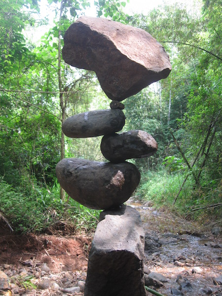

Preamble
- read this once
- read it again
- then tell it to your best friend
The story
Once upon a time there was a Chinese farmer whose horse ran away. That evening, all of his
neighbours came around to commiserate. They said,
[We are so sorry to hear
your horse has run away. This is most unfortunate.
] The farmer said, [
"Maybe."]
The next day the horse came back bringing seven wild horses with it, and in the evening
everybody came back and said, [Oh, isn’t that lucky. What a great turn of
events. You now have eight horses!
] The farmer again said, [
"Maybe."]
The following day his son tried to break one of the horses, and while riding it, he was
thrown and broke his leg. The neighbors then said, [Oh dear, that’s too
bad,
] and the farmer responded, ["Maybe."
]
The next day the conscription officers came around to conscript people into the army, and they
rejected his son because he had a broken leg. Again all the neighbors came around and said,
[Isn’t that great!
] Again, he said,
["Maybe."]
The whole process of nature is an integrated process of immense complexity, and it’s really impossible to tell whether anything that happens in it is good or bad - because you never know what will be the consequence of the misfortune; or, you never know what will be the consequences of good fortune.
Alan Watts (wikipedia: Alan Watts)
The dialog in the form of a table
| Event | Good or bad ? |
|---|---|
| Lose a horse | Maybe |
| Win more horses | Maybe |
| Son injury | Maybe |
| Avoid war | Maybe |
* Table representing the farmer's philosophy.
Conclusion
Good and Bad are just one perspective.
Bananas are good for monkeys, but monkeys are not good for bananas. Let's not make a big deal out of it...